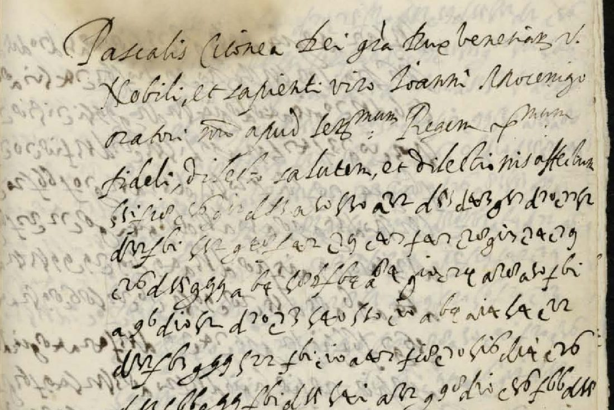
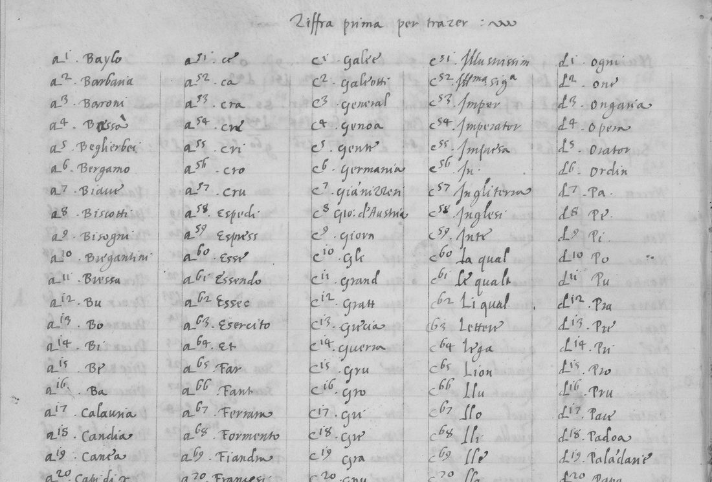
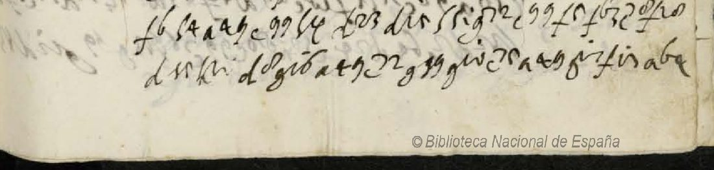
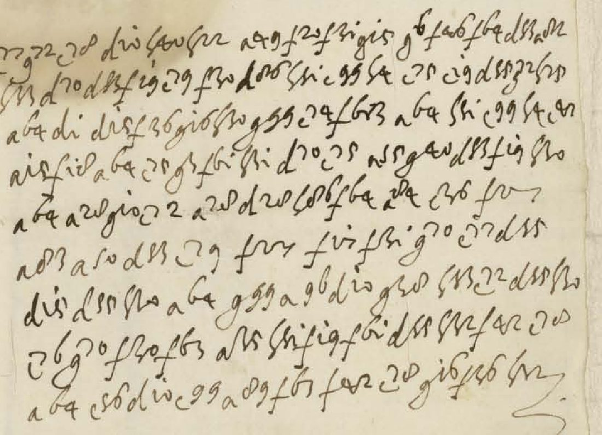

At a glanceKey from another archive, partial · 981 of 1,565 cipher groups
- The letter
- The Doge Pasquale Cicogna and the Senate to Giovanni Mocenigo, Venice’s ambassador with Henry III, dated Venice, 27 April 1589 and signed by the Senate secretary Marco Ottobon. With it is a copy of the Senate’s answer to the French ambassador in Venice.
- Where
- Biblioteca Nacional de España, Mss/994 ff. 34–38, the dossier of Luis Valle de la Cerda, Philip II’s cipher secretary. DECODE R2252, status N/A, cleartext language given as Latin.
- The cipher
- Groups of one base letter (a, c, d, f, g, h) and a figure from 1 to 99. They stand for single letters, syllables, whole words and nulls, all in one table.
- How it was deciphered
- The key is the Council of Ten’s Zifra Prima of 1577–78, a sheet in the Venetian state archive (DECODE R1789). Two extra values were found from context. The first-pass transcription misread the digits in a regular way. It was corrected line by line by hand, then by a decoder and by fitting proposed lines, each checked against a control.
- What it says
- France asked Venice for help for Henry III, and to move the Emperor to help him. The Senate answered that it would intercede with Pope Sixtus V instead, to “ammorzar l’incendio di guerra”.
- Still open
- 584 groups (37.3%), mostly on ff. 35v–36v and in gaps on ff. 37r–38r, where the digits of the only scan cannot be told apart. A 400-dpi scan or the Senate’s register copy in Venice would settle them.
- Credit
- Valle de la Cerda deciphered the letter at Turin in 1589; his solution is lost. Paolo Bonavoglia described the Council of Ten’s cipher register; Satoshi Tomokiyo described the Zifra Prima sheet and listed the letter as one with no known decipherment.
01 The letter, and how it came to Madrid
Mss/994 of the Biblioteca Nacional in Madrid is the dossier Luis Valle de la Cerda put together of his services to Philip II and Philip III as secretario de la cifra: letters he had deciphered, alphabets he had rebuilt, keys he had made. Item 5, at f. 34, is headed in a cartouche in Spanish: a letter in cipher from Venice, which the Infanta Catalina (Duchess of Savoy) gave to Valle at Turin on the Duke’s orders, “que declaró” (which he deciphered), and which has neither its key nor its decipherment, “por haverse perdido”. The printed catalogue of 1957 adds that the letter is from the secretary Marco Otthobon to the ambassador Juan Mocenigo, 27 April 1589, with an autograph signature. Tomokiyo lists it as a letter of which no decipherment is known.
The letter itself opens in clear Latin, in a chancery hand: Pascalis Ciconia Dei gratia Dux Venetiarum etc. Nobili et sapienti viro Ioanni Mocenigo oratori nostro apud Serenissimum Regem Christianissimum fideli dilecto salutem et dilectionis affectum. So it is not a private letter of Ottobon’s. It is a ducal letter of the Doge and Senate to their ambassador with Henry III, signed at the foot by the secretary of the Senate, as such letters were. The address on f. 38v repeats the ambassador’s title. Pasquale Cicogna was doge from 1585 to 1595. Marco Ottobon (1554–1649), a cittadino originario, was a Senate secretary from 1584 and much later grand chancellor. Giovanni Mocenigo was with the King at Tours that spring, after Henry III’s truce with Henry of Navarre.

The cipher runs over six and a half pages, about 120 lines and 1,528 groups in the first transcription. Part of it is in clear. The last six lines of f. 36r and the first four of f. 36v say why the Senate wrote in cipher: the French postmaster in Venice had shown it a passage from the Lyon postmaster, who had forwarded only a few lines of the ambassador’s despatch of 28 March, “che il rimanente con tutte le altre [lettere] tre sono state intercette”. The dateline (Dat. in nostro Ducali Palatio die xxvii Aprilis … MDLXXXIX) and “Marco Ottobon Secr.” follow on f. 36v. Ff. 37r–38r are a second piece in the same hand, with no protocol, which turns out to be the copy of the Senate’s answer to the French ambassador in Venice (section 04). The Venice–France road crossed Savoy, and that is how the packet reached Turin and Valle.
02 The key: the Council of Ten’s Zifra Prima
The Council of Ten kept its ciphers in registers, now in the Archivio di Stato di Venezia (Consiglio dei Dieci, Cifre, chiavi e scontri di cifra). Register 16 of busta 4 is the cipher book of Hieronimo di Franceschi, described by Paolo Bonavoglia. Its ff. 64–65 hold the Zifra prima in two parts, per scriver (for enciphering) and per trazer (for deciphering). DECODE has the leaves as R1789, dated only “1500–1799”. Tomokiyo describes it as a letter from a to h with a figure from 1 to 99, for letters, syllables and words “without distinction”.

The table was transcribed here from the DECODE images in full: 527 codes. Applied as it stands to the first transcription of the letter, it gave nonsense, although 94.8% of the letter’s groups are codes it defines. The fault was in the transcription. In this hand the 7 is a z-shaped stroke and had been read as 2, the 8 is a small closed loop and had been read as 0, and 3, 5 and 8 had been confused. The first transcription had no 7 at all, in 1,528 groups. With those re-readings the commonest groups fall on the commonest units of the table: a20 becomes a28 che, the c20–c29 run becomes c70–c79 lla lu lo li le la ma me mi mo, g20 becomes g70 da. Usage of the table’s syllables then follows their frequency in Italian (Spearman 0.286, against 0.231 at the 99th percentile of a structured null; p = 0.0008).
Two groups are not on the sheet as needed. d83 is the commonest group of the letter (66 times) and the sheet has no d83; it reads a in context. c86 is Maone on the sheet but reads o in the letter (Serenissim-o, o-ltre, o-ttima), 35 times. Both may be the sheet’s own values miswritten or misread (d53 = a, h86 = o), or homophones added to the 1589 issue. No other group read needs a value the sheet does not give. A second key in the same register (f. 79, DECODE R1790, a small cipher for the Captain in the Gulf, the patrol against the Uskoks and the governors of Zara) and the zifra-granda keys of 1590 and 1595 on DECODE were checked and are different systems.
03 The first piece: the Senate to Mocenigo
The first piece reports a speech by the French ambassador in Venice and the Senate’s answer to it. The text below gives what was deciphered, with … for groups left open; lines deciphered with low confidence are left out. It is in the original spelling (u for v, single consonants for double).
f. 35r. […] esposti delli travagli et bisogni […] di Sua Maestà Christianissima … nella sua prima audien[tia] … l’altra che hebbe da noi commemora[t]a … l’amor et afetione grande che quel Serenissimo Re porta alla Republica Nostra, et quanto confidi[a]mo nella cordiale corisponde[nza] … verso […] e ne ricercò che […] procur[asse con] Sua Cesarea Maestà di sovenir Sua Maestà Christianissima in tanta necessità et soministrarle alcun soccorso per proveder al iminente pericolo di quella corona et
“[…] having set out the troubles and needs of His Most Christian Majesty in his first audience, and in the second, which he had with us, recalled the great love and affection that the King bears the Republic, and how far he trusts in our cordial correspondence, he asked us to work with His Imperial Majesty to relieve His Most Christian Majesty in so great a need, and to give him some help to meet the imminent danger to that crown, and …” The lines on the Emperor are deciphered with medium confidence: “procur[asse con]” is a restoration of three doubtful groups.

ff. 35v–36v are the least read pages (48%, 35% and 29% of their groups). The legible stretches carry the thread: assicurar … dalli ne[mici]; the ambassador’s proposal that Venice [giudi]cassimo bene a collegarsi et stringersi maggiormente in qualche unione di lega (“should think it good to join and bind itself more closely in some union of league”); … iscusandosi; risposto quello che vederete della copia che vi mandamo (“answered what you will see from the copy we send you”); et perché informato di [qualche] mutatione et poi lascia[ta] intentione … da alcun degli ministri possiate …; and, just before the clear passage, accioché possiate con[…] … lettere et darci lume delle co[se], asking the ambassador to keep the Senate informed. What Mocenigo was to say at court, and the opening of f. 35v, are not read.
04 The second piece: the answer to the French ambassador
Ff. 37r–38r are the best-read part (70%, 79% and 84%). They are the “copia” announced on f. 35v: the Senate’s answer to the French ambassador, then André Hurault de Maisse (see his despatches of 1592–93), whose request it answers point by point (“quanto alle richieste fateci da Vostra […] in nome di quel Serenissimo Re, le dicemo che”). A small heading at the top of f. 37r and its first line, perhaps “[co]pia della risposta fata al Signor …”, are deciphered with low confidence only. The core of the answer, from f. 37v:
… desiderare et procurare il bene, la grande[z]za di quella Serenissima corona et particolar commodo et servitio della sua persona da noi tanto osserva[ta], habbiamo deliberato … interponer al presente … presso lo Sommo Pontifice la intercessione della Republica Nostra, perché Sua Santità si mova a dovere con la sua somma autorità favorire, ove farà bisogno, la causa gi[ustis]sima della Maestà Sua nell’aquetare [le] sollevationi di quel Regno et ammo[rzar] questo incendio di guerra, il qual vede[mo] con gravissimo danno et maggiori perico[li] di tutta la Christianità si va accende[n]do …
“… to desire and procure the good and the greatness of that most serene crown and the particular advantage and service of his person, whom we so much respect, we have resolved … to interpose at present with the Supreme Pontiff the intercession of our Republic, so that His Holiness may be moved, with his supreme authority, to favour where need shall be the most just cause of His Majesty in quieting the risings in that kingdom and putting out this fire of war, which we see kindling with very grave harm and greater dangers to all Christendom …”
Before this the Senate protests “la molta afetione che in tutti li tempi passati” it has borne the crown of France and “la grande stima che facemo della particolar persona di Sua Maestà Christianissima”, and regrets that it cannot now accompany its ready will “[con] effetti”. It closes on f. 38r: potrà Sua Maestà Christianissima conoscere qual […] dell’animo nostro verso la grandezza et ogni prosperità di lei et verso lo bene[ficio] et la quiete della Christianità … nasce da un[a] pronta et disposta volontà.

The answer fits what is known of Venice that spring. It refuses material help and offers mediation at Rome a month before Sixtus V’s monitorium against Henry III (24 May 1589). The Doge’s letters to the Venetian ambassador at Rome, Badoer, of 29 April and 13 May 1589 (printed in Hübner’s Sixte-Quint) use the same language, “la grandezza del pericolo iminente” and “questo incendio universale”. That parallel confirms the subject; it is not a copy of this text, and nothing here was taken from it.
05 Method, and what each step shows
The readings rest on four steps of different strength. They are kept apart here because the later ones depend on the earlier ones.
- Transcription (first pass, September 2026). All seven pages were transcribed from the BNE Digital images, which are the same scans as on DECODE at about 130 dpi: 1,528 groups, 196 distinct. One line read twice from two crops disagreed in three of five groups, so the first pass is about 70% reliable per group. Ciphertext-only annealers, run blind, failed on matched synthetic controls (0–9% of letters recovered with no transcription noise at all), so no attempt was made to break the cipher without a key.
- The key and the hand reading (9 October). With the Zifra Prima transcribed, three readers (this session and two helper agents) went through every line, choosing for each group the code that is compatible with the image and the digit confusions and that makes Italian with its neighbours, and grading each line high, medium or low. Result: 721 of 1,566 groups read (46.0%). The best evidence for the key is here: long runs that read as continuous chancery Italian, such as the end of f. 35r above, from a table made in Venice twelve years before.
- A calibrated decoder (
dec.py). A noisy-channel decoder learns from the hand-read lines how the first pass misreads each base letter and digit, and searches the letter for the code sequence that best combines that confusion model, how often each code is used, and a model of 16th-century diplomatic Italian (Guicciardini, Machiavelli, the papal nuncios’ despatches, and Albèri’s Relazioni degli ambasciatori veneti at double weight). Trained on six pages and tested on the seventh, it agrees with the hand reading on 644 of 721 groups (89.3%), where taking the first pass as it stands agrees on 65.9%. On synthetic text corrupted the same way it recovers 82.6% of groups at the first pass’s error rate, but only 61% at a higher one. This shows the decoder is useful where some sense already anchors a line. It does not by itself read the hard pages: decoding ff. 35v–36v freely gives Italian fragments, not continuous sense. - Fitting proposed lines, with a control (
fit.py,fitcontrol.py). For the remaining lines the reading was done the other way round. An Italian text was proposed for a line (from the hand reading, the decoder’s draft and the context), and the program looked for the code sequence spelling exactly that text whose codes are each a plausible misreading of the transcribed group. A group counts as read only if it lies outside the gaps and its confusion score passes a fixed threshold. Such a fit can always place some letters, so every proposed text was also fitted onto fifteen wrong lines of the letter. At the threshold used, 10% of the groups of a wrong line pass by chance, against 80% on the true lines. Five lines whose fit did not beat the best wrong-line fit by three groups were left at low confidence. This step added 260 groups (46.0% → 62.7%).
What the control does and does not establish. It shows that a proposed text fits its own line far better than it fits other lines. A line that passes is evidence for the proposed text, but not proof of every word. The text came from the reader, a fitted line can still have a wrong word where a wrong code fits about as well, and roughly one group in ten would pass by chance. For that reason no line read only by the fit is graded high: all the high lines (236 groups read) come from the hand reading against the images, and every line on ff. 35v–36v is medium at best. The measure is measure_rd.py: groups in high or medium lines that carry no doubt mark.
| page | groups | hand reading | after the fit |
|---|---|---|---|
| f. 35r | 212 | 134 (63%) | 143 (67%) |
| f. 35v | 249 | 29 (12%) | 120 (48%) |
| f. 36r | 224 | 33 (15%) | 78 (35%) |
| f. 36v | 58 | 10 (17%) | 17 (29%) |
| f. 37r | 342 | 193 (56%) | 240 (70%) |
| f. 37v | 363 | 238 (65%) | 285 (79%) |
| f. 38r | 117 | 84 (72%) | 98 (84%) |
| all | 1,565 | 721 (46.0%) | 981 (62.7%) |
Extent: 981 of 1,565 cipher groups, 62.7%. That is well below the project’s 95% bar, so the letter counts as deciphered in part. The key itself is not in doubt as far as the read text goes; what is missing is a sure reading of the digits.
06 What remains uncertain
Grades follow the project’s convention: H high-confidence lines from the hand reading against the key and the images (236 groups read); M medium lines, from the hand reading or the fit (745 groups read); letters in square brackets are supplied from sense (I).
- ff. 35v–36v, about 316 groups unread (f. 35v ll. 3–6, 10–11, 15, 20; f. 36r ll. 4, 6, 8–11, 14–16; f. 36v ll. 2–3, 5–6; and gaps inside read lines). The digits of the only scan cannot be separated (2/7, 3/5/8, 0/8), the bleed-through is heavy, and these lines have no anchoring phrase from which to choose. Needs a 400-dpi reproduction of ff. 35–38 from the BNE, or the Senate’s register copy.
- f. 35r ll. 1–3 and 12, about 69 groups with the gaps in read lines: under the water stain at the head of the leaf, or too faint.
- ff. 37r–38r, about 199 groups (f. 37r ll. 1–2, 7, 10, 22, 24; f. 37v ll. 1, 3; gaps inside read lines): unresolved digits and losses in the gutter. The heading line “[co]pia della risposta fata al Signor …” is low confidence, and the identification of the second piece as the answer to the French ambassador rests on f. 37r ll. 15–16 (medium).
- The four small groups at the top right of f. 37r: too small to transcribe at this resolution.
- d83 = a and c86 = o are found from context, not from the sheet (I, though well supported: 66 and 35 occurrences).
- f. 35r l. 14, “procur[asse con] Sua Cesarea Maestà”: the request to approach the Emperor is deciphered from the two nomenclator groups for His Imperial and His Most Christian Majesty (M); the verb before them is a restoration (I).
- The French ambassador is named here as de Maisse because he held the Venice embassy at the time; the letter as read does not name him.
The Senate’s register (ASVe, Senato, Deliberazioni Secreta, 1589, under 27 April) should hold the plain text of both pieces, and de Maisse’s letter-book “avec les responses” (British Library, Add MS 30635–30637) the answer. Neither is online. Either would turn the remaining gaps into a matter of applying the key, and would check every reading on this page.
07 Sources
- Biblioteca Nacional de España, Mss/994 (olim Mss/18724/5/1), ff. 34–38: BNE Digital oid 0000174344; DECODE R2252 (nine openings, ff. 33v–63v; the letter is images 1–6).
- Archivio di Stato di Venezia, Consiglio dei Dieci, Cifre, chiavi e scontri di cifra, b. 4 reg. 16 ff. 64–65: DECODE R1789 (the Zifra Prima); f. 79: DECODE R1790.
- Inventario general de manuscritos de la Biblioteca Nacional, III (897–1100), Madrid 1957, pp. 214–216.
- S. Tomokiyo, Cryptiana: list of historical ciphers without a known solution (“Venetian Letter in Spanish Archives”), Luis Valle de la Cerda, Venetian ciphers with superscripts.
- P. Bonavoglia, “Hieronimo di Franceschi and Pietro Partenio: two unknown Venetian cryptologists”, HistoCrypt 2019, pp. 3–11; “The enigma of Franceschi’s falso scontro”, HistoCrypt 2022; “The ciphers of the Republic of Venice: an overview”, Cryptologia 46 (2022).
- A. Menniti Ippolito, “Ottoboni, Marco”, Dizionario Biografico degli Italiani 79 (2013).
- J. A. von Hübner, Sixte-Quint, ii p. 236 and iii no. 36 (the Doge to the ambassador at Rome, 29 April and 13 May 1589): parallel wording, not this text.
- Calendar of State Papers, Venice, viii (1581–1591), ed. H. F. Brown, 1894: nothing for 27 April 1589.
- E. Albèri (ed.), Relazioni degli ambasciatori veneti al Senato (Florence, 1839–63), from the Internet Archive, as language-model text only.
Transcription, key table, decoder, crib fit and its control, reading files and notes: targets/ottobon/ in the repository. The Venetian language model is registered as it-venezia in lang/.